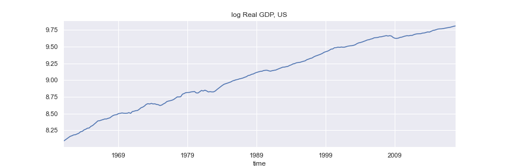
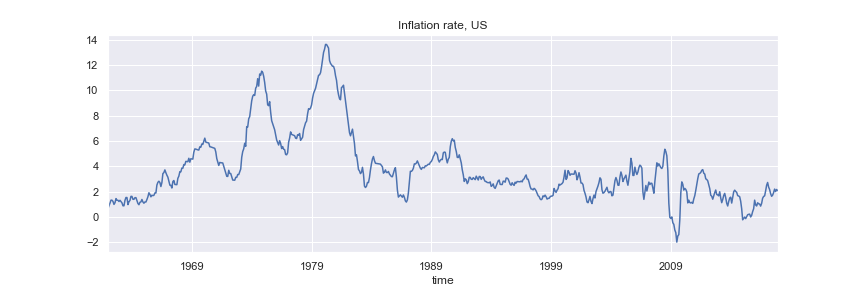

Non-stationarity and unit root processes
Contents
Non-stationarity and unit root processes¶
import warnings
warnings.simplefilter("ignore", FutureWarning)
from statsmodels.tsa.deterministic import DeterministicProcess
import pandas as pd
import numpy as np
from numpy.random import default_rng
from statsmodels.tsa.arima_process import arma_acovf, ArmaProcess
from statsmodels.tsa.arima.model import ARIMA
import matplotlib.pyplot as plt
import statsmodels.api as sm
gen = default_rng(1)
import seaborn as sns
sns.set_theme()
sns.set_context("notebook")
Why need stationarity?¶
stationarity is a form of constancy of the properties of the process (mean, variance, autocovariances)
needed in order to be able to learn something about those properties
Many macroeconomic time series are non-stationary
#df = pd.read_excel('nama_10_gdp__custom_2373104_page_spreadsheet.xlsx',
# sheet_name='Sheet 1',
# skiprows=range(9), usecols=[0,1], names=['year', 'GDP'], index_col=0, parse_dates=True,
# ).loc['1995':'2021']
#df = df.astype('float')
#data = np.log(df['GDP'])
#title='Real GDP, Euro Area'
#ylabel='natural log of millions of euro'
#fig = data.plot(figsize=(10,3), title=title,ylabel=ylabel)
#plt.savefig('images/rGDPea.png')
ARMA(p, q)¶
in lag operator notation
ARMA(p, q) is stationary if the AR§ part is stationary, i.e. if all roots of
are outside the unit circle (\(|x|>1\))
a non-stationary process with one root \(x=1\) and the other roots \(|x|>1\) is called a unit root process
if \(z_t\) is an unit root process, \(\Delta z_t = z_t - z_{t-1} = (1-L) z_t\) is stationary
and if all roots of
are outside the unit circle (\(|x|>1\))
the AR part
a non-stationary process whose first difference is stationary is called integrated of order one (\(I(1)\))
why “integrated”:
\(z_t\) is the sum (integral) of a process (is an “integrated” process) starting from some initialization \(z_0\)
\(\sum_{j=1}^{t} u_j\) refered to as a stochastic trend
\(\Delta z_t\) is \(I(0)\) (stationary, no need to difference)
a non-stationary process which requres double difference to be stationary is called integrated of order two (\(I(2)\))
if \(z_t\) is \(I(2)\) then \(\Delta^2 z_t = (1-L)^2 z_t\) is \(I(0)\)
etc for \(I(d)\).
if \(z_t\) is \(I(d)\) then \(\Delta^d\) is \(I(0)\)
\(d\) is the order of integration
if we difference a stationary process, we get another stationary process. However, no differencing was required to achieve stationarity
stationary process whose cumulative sum is also stationary, are called overdifferenced, and denoted with \(I(-1)\)
example:
\(z_t\) is stationary but so is \(\varepsilon_t\)
\(z_t\) is \(I(-1)\)
non-invertible MA part
another example:
is \(I(-1)\)
linear time trend (deterministic trend)
\(z_t\) is called trend-stationary process
in the sense that it is non-random
more generally:
where \(\mathbf{x_t}\) are known constants
is stationary
Gaussian MLE¶
and, if \(\nu_t\) is stationary Gaussian time series process
we have
where
for example, if \(z_t = \delta_0 + \delta_1 t + \nu_t\), the \(t\)-th row of \(\boldsymbol X\) is \([1, t]\)
Models with time trend in Python¶
Generate \(\boldsymbol X\) for
\(T \times 2\) matrix with \(t\)-th row given by \([1, t]\)
from statsmodels.tsa.deterministic import DeterministicProcess
T = 500
index = pd.RangeIndex(0, T)
det_proc = DeterministicProcess(index, constant=True, order=1) # constant and a linear (1 order) trend
X = det_proc.in_sample()
X.head()
| const | trend | |
|---|---|---|
| 0 | 1.0 | 1.0 |
| 1 | 1.0 | 2.0 |
| 2 | 1.0 | 3.0 |
| 3 | 1.0 | 4.0 |
| 4 | 1.0 | 5.0 |
# constant and time trend part
delta = np.array([3, .1])
exog = X.values@delta
\(\nu_t\) as ARMA(1,1) process
alpha = np.array([.8])
beta = np.array([0.1])
ar = np.r_[1, -alpha] # coefficient on z(t) and z(t-1)
ma = np.r_[1, beta] # coefficients on e(t) and e(t-1)
arma11_process = ArmaProcess(ar, ma)
nu = arma11_process.generate_sample(T, distrvs=gen.normal)
z = exog + nu
Option 1 Estimate indicating constant and time trend
arma_model = ARIMA(z, order=(1, 0, 1), trend="ct")
arma_results = arma_model.fit()
print(arma_results.summary())
SARIMAX Results
==============================================================================
Dep. Variable: y No. Observations: 500
Model: ARIMA(1, 0, 1) Log Likelihood -733.673
Date: Mon, 28 Mar 2022 AIC 1477.345
Time: 10:48:25 BIC 1498.418
Sample: 0 HQIC 1485.614
- 500
Covariance Type: opg
==============================================================================
coef std err z P>|z| [0.025 0.975]
------------------------------------------------------------------------------
const 3.0500 0.512 5.954 0.000 2.046 4.054
x1 0.0992 0.002 57.573 0.000 0.096 0.103
ar.L1 0.7971 0.035 22.981 0.000 0.729 0.865
ma.L1 0.0650 0.057 1.142 0.253 -0.047 0.176
sigma2 1.1054 0.073 15.235 0.000 0.963 1.248
===================================================================================
Ljung-Box (L1) (Q): 0.00 Jarque-Bera (JB): 0.28
Prob(Q): 1.00 Prob(JB): 0.87
Heteroskedasticity (H): 1.20 Skew: -0.01
Prob(H) (two-sided): 0.24 Kurtosis: 2.89
===================================================================================
Warnings:
[1] Covariance matrix calculated using the outer product of gradients (complex-step).
Option 2 Estimate providing exogenous regressors
arma_model2 = ARIMA(z, exog=X, order=(1, 0, 1), trend="n")
arma_results2 = arma_model2.fit()
print(arma_results2.summary())
SARIMAX Results
==============================================================================
Dep. Variable: y No. Observations: 500
Model: ARIMA(1, 0, 1) Log Likelihood -733.673
Date: Mon, 28 Mar 2022 AIC 1477.345
Time: 10:48:29 BIC 1498.418
Sample: 0 HQIC 1485.614
- 500
Covariance Type: opg
==============================================================================
coef std err z P>|z| [0.025 0.975]
------------------------------------------------------------------------------
const 3.0500 0.512 5.954 0.000 2.046 4.054
trend 0.0992 0.002 57.573 0.000 0.096 0.103
ar.L1 0.7971 0.035 22.981 0.000 0.729 0.865
ma.L1 0.0650 0.057 1.142 0.253 -0.047 0.176
sigma2 1.1054 0.073 15.235 0.000 0.963 1.248
===================================================================================
Ljung-Box (L1) (Q): 0.00 Jarque-Bera (JB): 0.28
Prob(Q): 1.00 Prob(JB): 0.87
Heteroskedasticity (H): 1.20 Skew: -0.01
Prob(H) (two-sided): 0.24 Kurtosis: 2.89
===================================================================================
Warnings:
[1] Covariance matrix calculated using the outer product of gradients (complex-step).
Difference-stationary vs trend-stationary¶
trend-stationary if \(\nu_t\) is stationary
difference-stationary if \(\nu_t\) is a unit root process
\(\nu_t\) is a unit root process if in
one of the roots of
is \(x=1\), and the other roots are \(|x|>1\)
all \(p\) roots of
are \(|x|>1\)
\(\Delta \nu_t = (1-L)\nu_t\) is a stationary ARMA(p, q) process
Difference-stationary process¶
\( \nu_t\) is an ARIMA(p, 1, q) process
\(z_t\) is an ARIMAX(p, 1, q) process (ARIMA with exogenous part - constant and time trend)
\(\Delta z_t\) is an ARMAX(p, q) process (ARMA with exogenous part - constant)
model \(z\) as regression model with ARIMA errors
Difference between trend- and difference-stationary models¶
example
at \(t+h\)
forecast at \(t\):
if \(|\alpha|<1\), as \(h\rightarrow \infty\), \(\alpha^h \rightarrow 0\)
For trend-stationary processes:
the long-run forecast is the unconditional mean of \(z_t\) (mean reversion)
the long-run forecast is independent of \(z_t\)
shocks to \(z_t\) have temporary impact (transitory)
if \(\alpha=1\),
For difference-stationary processes:
the value of \(z_t\) has a permanent effect on all future forecasts
shocks to \(z_t\) have permanent effects
\(z_t\) is expected to grow by \(\delta_1\) every period
Martingale process¶
if for \(\{z_t\}_{-\infty}^{\infty}\)
\(z_t\) is a martingale process, and \(\Delta z_t\) is a martingale difference process
unlike a random walk, martingale process allows for heteroskedasticity or conditional heteroskedasticity
Beveridge-Nelson decomposition¶
Every difference-stationary process can be written as a sum of a random walk and a stationary component
the effect of innovations (shocks) can be decomposed into permanent and transitory effects
ARIMA(p,1,q)
\(\alpha(L)\) is invertible. Why?
equivalently (by invertability of \(\alpha(L)\))
(a bit of magic here…)
Since 1 is a root of the polinomial
it can be witten as
and
where
denote \(z_t^p = (1-L)^{-1}\delta_1 + (1-L)^{-1}\phi(1)\varepsilon_t\)
then,
Therefore
\(z^p_t\) - permanent component (trend)
\(z^s_t\) - transitory component (cycle)
\(\varepsilon_t\) has a permanent impact on \(z_t\) through \(z_t^p\)
\(\varepsilon_t\) has a transitory impact on \(z_t\) through \(z_t^s\)
relative importance of permanent/transitory impact depends on the value of \(\phi(1)\)
example ARIMA(0,1,1)
Random walk with a drift model:¶
Beveridge-Nelson decomposition¶
Every difference-stationary processes can be written as a sum of a random walk and a stationary component
many macro variables are well represented by ARIMA(p,1,q) models
every ARIMA(p,1,q) model has a random walk stochastic trend
the growth in macro variables can be characterized by stochastic trends
Forecasting integrated variables¶
if \(z_t\) is \(I(1)\), we estimate and forecast using \(\Delta z_t\)
from the forecasts of \(\Delta z_{t+i}\), \(i=1, 2, \cdots, h\)
Detecting stochastic trends by unit root test¶
Unit root tests are one-sided tests:
\(H_0\): unit root
\(H_1\): stationary
Augmented Dickey–Fuller test¶
Consider AR(2) process:
re-write as
and
For AR(2) process, unit root means that \(x=1\) is a solution to
i.e
Therefore, testing for unit root is equivalent to testing that \(\rho=0\) in
In general AR§ model for \(z_t\)
testing for unit root is equivalent to testing that \(\rho=0\)
in (5) the \(H_1\) is that \(z_t\) is a stationary mean 0 AR§ process
to test for unit root agains \(H_1\) that \(z_t\) is a stationary around a constant (\(\neq 0\)) mean, estimate
to test for unit root agains \(H_1\) that \(z_t\) is a stationary around a deterministic linear time trend (trend-stationary)
appropriate for series that exhibit growth over the long run
The test for unit root is a test of \(\rho=0\) (unit root) against the alternative of \(\rho<0\) (stationary)
The asymptotic distribution of the test statistic for \(\rho\) is non-standard.
The critical values of the test statistics are obtained by Monte Carlo simulations, and depend of whether constant and time trend are included
The null hypothesis of a unit root is rejected when value of the test statistics is below the critical value.
If the null hypothesis cannot be rejected, \(z_t\) should be differenced prior to estimation
ADF test in Python¶
df = pd.read_stata(r"C:\Users\eeu227\Documents\PROJECTS\econ108-repos\econ108-practice\EconometricsData\FRED-QD\FRED-QD.dta")
rgdp = df[['time', 'gdpc1']].set_index('time')['1961q1':].rename(columns={'gdpc1': 'rGDP'})
rgdp = np.log(rgdp)
df = pd.read_stata(r"C:\Users\eeu227\Documents\PROJECTS\econ108-repos\econ108-practice\EconometricsData\FRED-MD\FRED-MD.dta")
unemp = df[['time', 'unrate']].set_index('time')['1961-01':]
df = pd.read_stata(r"C:\Users\eeu227\Documents\PROJECTS\econ108-repos\econ108-practice\EconometricsData\FRED-MD\FRED-MD.dta")
cpi = np.log(df[['time', 'cpiaucsl']].set_index('time')['1961-01':])
dcpi = (cpi.diff(12)*100).dropna()
Real GDP¶
#fig = rgdp.plot(figsize=(12,4), title='log Real GDP, US', legend=False)
#plt.savefig('images/rGDPus.png')

from statsmodels.tsa.stattools import adfuller
def get_adfresults(dftest):
dfoutput = pd.Series(
dftest[0:4],
index=[
"Test Statistic",
"p-value",
"#Lags Used",
"Number of Observations Used",
],
)
for key, value in dftest[4].items():
dfoutput[f"Critical Value ({key})"] = value
return dfoutput
ADF with constant and trend, 4 lags
dftest = adfuller(rgdp, maxlag=4, autolag=None, regression='ct')
dftest
(-2.0141544954585036,
0.5937024444875985,
4,
223,
{'1%': -3.9999506167815206,
'5%': -3.4303636888103926,
'10%': -3.138725564735756})
get_adfresults(dftest)
Test Statistic -2.014154
p-value 0.593702
#Lags Used 4.000000
Number of Observations Used 223.000000
Critical Value (1%) -3.999951
Critical Value (5%) -3.430364
Critical Value (10%) -3.138726
dtype: float64
Automatically determine optimal number of lags using AIC
dftest = adfuller(rgdp, autolag="AIC", regression='ct')
get_adfresults(dftest)
Test Statistic -2.157741
p-value 0.513651
#Lags Used 2.000000
Number of Observations Used 225.000000
Critical Value (1%) -3.999579
Critical Value (5%) -3.430185
Critical Value (10%) -3.138621
dtype: float64
Unemployment Rate¶
#fig = unemp.plot(figsize=(12,4), title='Unemployment rate, US', legend=False)
#plt.savefig('images/UNus.png')
dftest = adfuller(unemp, autolag='AIC', regression='c')
get_adfresults(dftest)
Test Statistic -2.996063
p-value 0.035264
#Lags Used 12.000000
Number of Observations Used 671.000000
Critical Value (1%) -3.440133
Critical Value (5%) -2.865857
Critical Value (10%) -2.569069
dtype: float64
Consumer Price Inflation¶
#fig = dcpi.plot(figsize=(12,4), title='Inflation rate, US', legend=False)
#plt.savefig('images/dCPIus.png')

dftest = adfuller(dcpi, autolag='AIC', regression='c')
get_adfresults(dftest)
Test Statistic -2.804916
p-value 0.057575
#Lags Used 15.000000
Number of Observations Used 656.000000
Critical Value (1%) -3.440358
Critical Value (5%) -2.865956
Critical Value (10%) -2.569122
dtype: float64
ADF test using ARCH¶
from arch.unitroot import ADF
adf = ADF(rgdp, trend="ct")
adf.summary()
| Test Statistic | -2.158 |
| P-value | 0.514 |
| Lags | 2 |
Trend: Constant and Linear Time Trend
Critical Values: -4.00 (1%), -3.43 (5%), -3.14 (10%)
Null Hypothesis: The process contains a unit root.
Alternative Hypothesis: The process is weakly stationary.
Examine the regression results¶
reg_res = adf.regression
print(reg_res.summary())
OLS Regression Results
==============================================================================
Dep. Variable: y R-squared: 0.176
Model: OLS Adj. R-squared: 0.161
Method: Least Squares F-statistic: 11.76
Date: Mon, 28 Mar 2022 Prob (F-statistic): 1.13e-08
Time: 16:43:14 Log-Likelihood: 786.27
No. Observations: 225 AIC: -1563.
Df Residuals: 220 BIC: -1545.
Df Model: 4
Covariance Type: nonrobust
==============================================================================
coef std err t P>|t| [0.025 0.975]
------------------------------------------------------------------------------
Level.L1 -0.0217 0.010 -2.158 0.032 -0.041 -0.002
Diff.L1 0.2365 0.065 3.611 0.000 0.107 0.366
Diff.L2 0.1917 0.066 2.923 0.004 0.062 0.321
const 0.1848 0.083 2.231 0.027 0.022 0.348
trend 0.0001 7.5e-05 1.935 0.054 -2.67e-06 0.000
==============================================================================
Omnibus: 17.613 Durbin-Watson: 1.994
Prob(Omnibus): 0.000 Jarque-Bera (JB): 56.070
Skew: -0.116 Prob(JB): 6.68e-13
Kurtosis: 5.435 Cond. No. 2.21e+04
==============================================================================
Notes:
[1] Standard Errors assume that the covariance matrix of the errors is correctly specified.
[2] The condition number is large, 2.21e+04. This might indicate that there are
strong multicollinearity or other numerical problems.
Examine the regression residuals¶
resids = pd.DataFrame(reg_res.resid)
resids.index = rgdp.index[3:]
resids.columns = ["resids"]
fig = resids.plot(figsize=(12,4))
fig, ax = plt.subplots(figsize=(12,4))
fig = sm.graphics.tsa.plot_acf(reg_res.resid, lags=23, ax=ax)
ax.set_ylim([-0.3, 1.1])
(-0.3, 1.1)